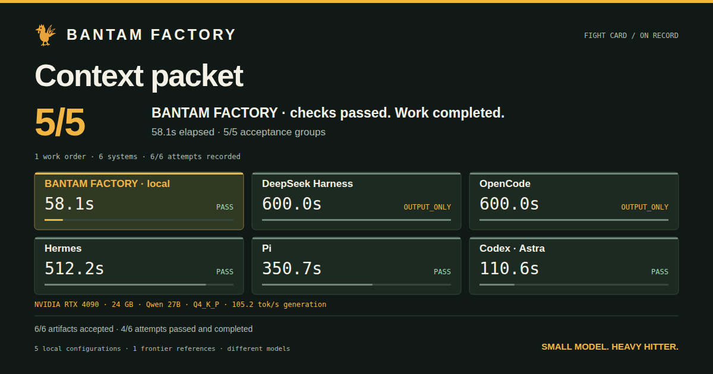

BUILD01 / 06

Context packet
Fit complete, attributable context sections into a strict UTF-8 byte budget.
| System | Result | Wall time |
|---|---|---|
| BANTAM · local | PASS | 58.1s |
| OpenCode | OUTPUT_ONLY | 600.0s |
| Codex · Astra | PASS | 110.6s |
Partial accounting disclosed in the replay.
Watch the fight Get the measurements ↓Read conditions and accounting notes